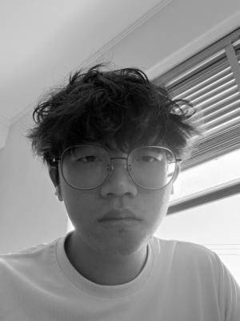
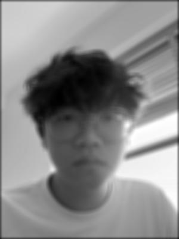

CS180, Fall 2026
This project is about filters, small grids of weights that get slid across an image to blur it, sharpen it or find its edges. Part 1 builds convolution from scratch and uses it to find edges, and Part 2 uses the same operation to split images into low and high frequencies and recombine them.
Convolution takes a small kernel, centers it on every pixel, multiplies each kernel value by the pixel under
it and adds everything up, and that sum becomes the output pixel. Before sliding, I flip the kernel both ways
with kernel[::-1, ::-1], without the flip it would be correlation instead of convolution. At the
edges of the image the kernel hangs off the side, so I zero pad the image by kh // 2 rows and
kw // 2 columns first, which keeps the output the same size as the input.
I wrote it two ways. The four loop version goes over every output pixel and then over every kernel entry one at a time. The two loop version only loops over the output pixels, cuts out the patch under the kernel and does the multiply and sum in one line with NumPy.
def pad(img, pad_h, pad_w):
h, w = img.shape
arr = np.zeros((h + 2*pad_h, w + 2 * pad_w))
arr[pad_h:pad_h + h, pad_w:pad_w + w] = img
return arr
def conv_four_loops(img, kernel):
#flip the kernel first
kernel = kernel[::-1, ::-1]
#get the shapes
kh, kw = kernel.shape
h, w = img.shape
#pad the image so the kernel doesn't go out of bounds
padded = pad(img, kh // 2, kw // 2)
output = np.zeros((h, w))
#sweep the kernel across the image and calculate the weighted sum
for i in range(h):
for j in range(w):
total = 0
for m in range(kh):
for n in range(kw):
total += padded[i + m, j + n] * kernel[m, n]
output[i, j] = total
return outputdef conv_two_loops(img, kernel):
#flip the kernel first
kernel = kernel[::-1, ::-1]
#get the shapes
kh, kw = kernel.shape
h, w = img.shape
#pad the image so the kernel doesn't go out of bounds
padded = pad(img, kh // 2, kw // 2)
output = np.zeros((h, w))
#sweep the kernel across the image and calculate the weighted sum
for i in range(h):
for j in range(w):
patch = padded[i: i+kh, j: j+kw]
output[i, j] = np.sum(patch * kernel)
return output

I tested both on a 400 x 300 grayscale selfie with a 9 x 9 box filter, where every weight is 1/81 so each
pixel becomes the average of its neighbors. All three versions give the same image, the biggest difference between
my four loop and two loop versions is 7.8e-16 and between mine and scipy.signal.convolve2d is
5.6e-16, which is just floating point rounding. The speed is very different though, four loops took 1.82
seconds, two loops took 0.20 seconds and scipy took 0.008 seconds, since scipy runs its loops in C instead
of Python. The dark frame around the blurred images comes from the zero padding, near the edges some of the
81 pixels being averaged are black padding, which pulls the average down.
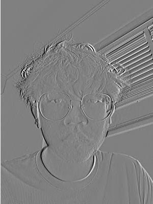
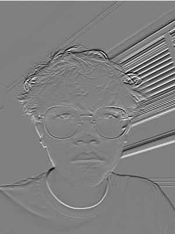
I also ran the finite difference operators Dx = [1, -1] and Dy = [1, -1] turned vertical. Each one subtracts a pixel from its neighbor, so flat areas like the wall go to zero and edges light up. Dx picks up vertical edges like the sides of my glasses and Dy picks up horizontal ones like the blinds. Both match scipy exactly, with a difference of 0.
Here I applied Dx and Dy to the cameraman image to get the partial derivatives in x and y, then combined them
into the gradient magnitude, np.sqrt(dx**2 + dy**2), which is how strong the edge is at each
pixel regardless of its direction. From here on I used scipy.signal.convolve2d with
boundary="symm", which mirrors the image at the border instead of padding with zeros, so the
border doesn't show up as a fake edge.
Even with that there was still a white frame in my edge images. It turned out the cameraman png has a white margin baked into the file, 7 rows on top and a few rows and columns on the other sides, and the jump from white into the photo counts as an edge. I cropped it off, so the images here are 532 x 532 instead of 542 x 540.
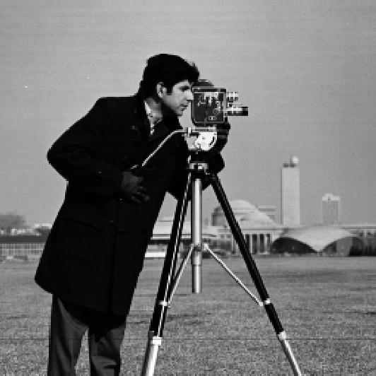
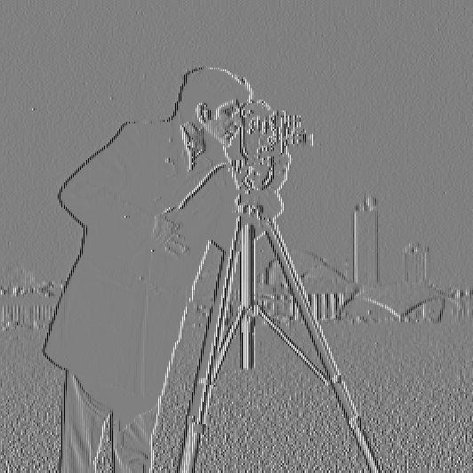
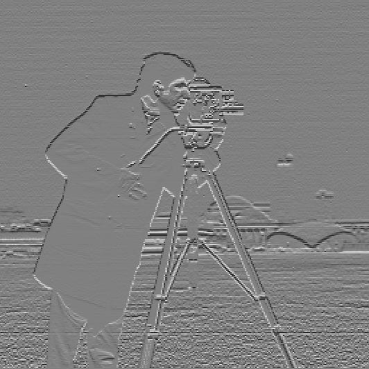
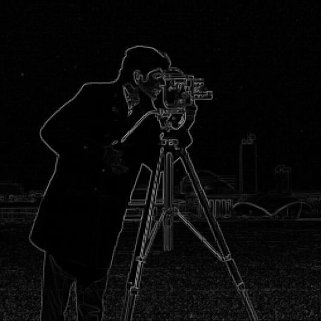
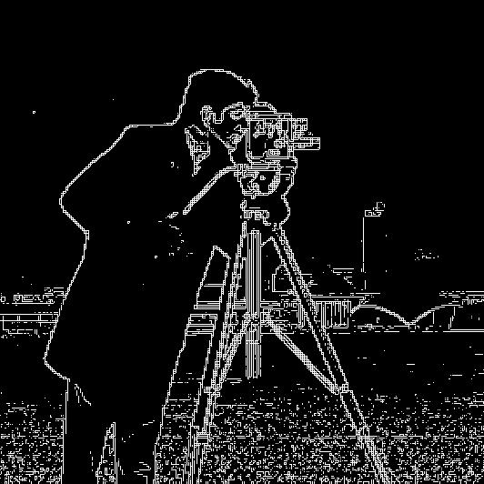
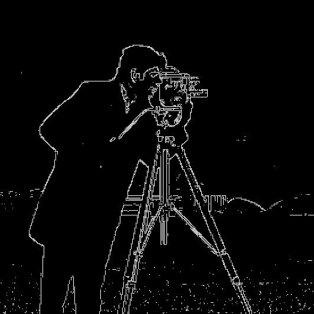
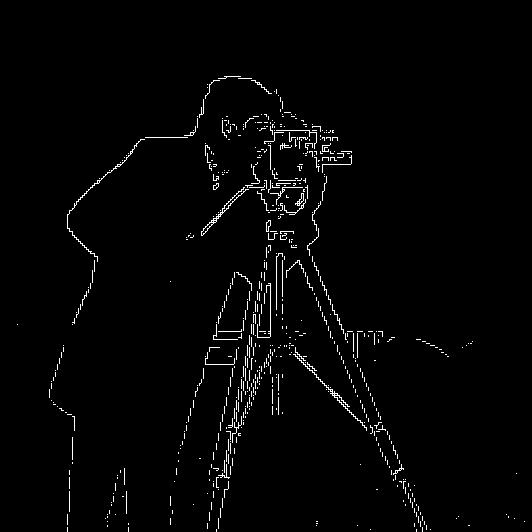
To get a binary edge image I kept every pixel whose magnitude is above a threshold. At 0.1 the grass at the bottom is covered in speckle, since the finite differences react to every small change in the grass texture. At 0.3 the noise is gone but so are most of the buildings in the background, and the outline of the coat starts breaking into gaps. I went with 0.2, it's the lowest value where the grass stops taking over and the highest before the real outlines start falling apart. Even at 0.2 the grass never fully cleans up, which is the problem 1.3 fixes.
The noise in 1.2 comes from the derivatives reacting to tiny changes between neighboring pixels. The fix is to
blur the image first so those small changes get smoothed out and only the big edges are left. I made a 7 x 7
Gaussian with sigma 1 using cv2.getGaussianKernel, which gives a 1D Gaussian, and took its outer
product with itself to get the 2D version. Then I blurred cameraman with it and repeated everything from 1.2.
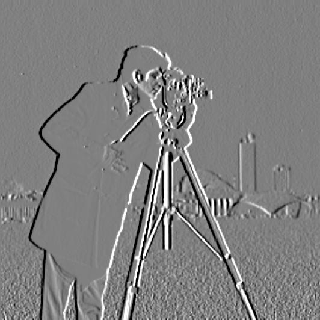
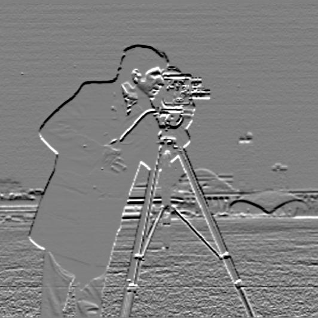

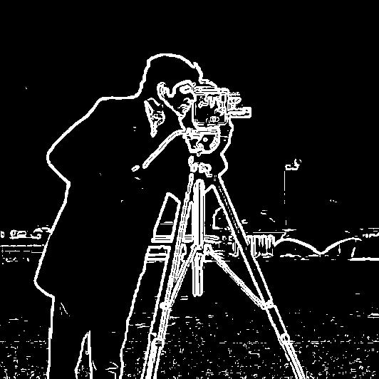
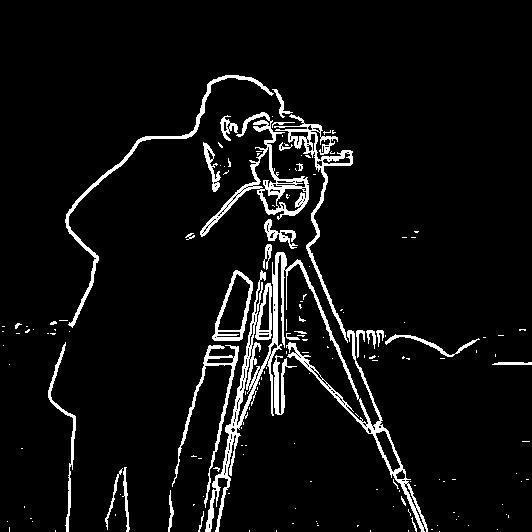
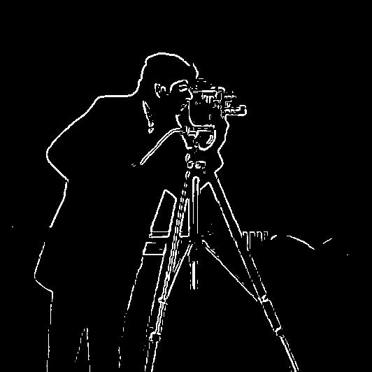
Blurring lowers all the gradient values, the max magnitude drops from 0.87 to 0.33, so the thresholds from 1.2 are too high now. I went with 0.08. Compared to 1.2 the grass is almost completely clean, the outlines of the coat, camera and tripod are solid continuous lines instead of broken up pixels, and the background buildings are still there. The tradeoff is that the edges are thicker, since the blur spreads each edge over a few pixels.
Since convolution is associative, blurring and then taking the derivative is the same as convolving the Gaussian with Dx and Dy first and using the result as a single filter. These are the derivative of Gaussian (DoG) filters. Each one is a blob that is positive on one side and negative on the other.
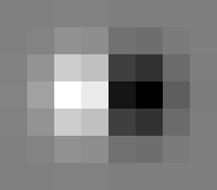
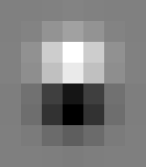
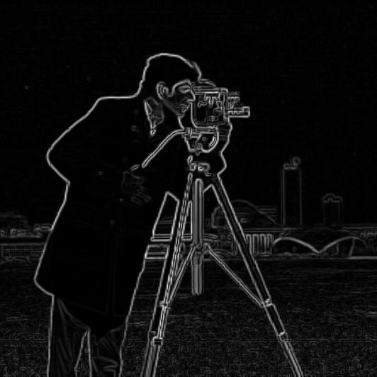
Applying the DoG filters to the original image in one convolution gives the same result as blurring and then differentiating, the biggest difference between the two gradient magnitudes is 6.2e-16, which is just rounding. The DoG version is nicer since it's one convolution per direction instead of two.
A Gaussian blur only keeps the low frequencies of an image, so subtracting the blurred image from the original
leaves just the high frequencies, the edges and fine detail. Adding those high frequencies back on top of the
original makes the detail stronger, which is what makes an image look sharper. This is the unsharp mask:
sharpened = img + alpha * (img - blur), where alpha controls how much detail gets added.
Since the blur is a convolution with a Gaussian G, the whole thing can be rewritten as one filter.
img + alpha(img - img ⊛ G) = img ⊛ ((1 + alpha)e - alpha G), where ⊛ is convolution and e is the
impulse, a kernel that is 1 in the middle and 0 everywhere else. So the unsharp mask filter is (1 + alpha) times the
impulse minus alpha times the Gaussian, and one convolution with it gives the sharpened image. I checked
both ways on the Taj Mahal and the biggest difference was 1.8e-15. Everything here is in color, I just
convolve each channel on its own, with a Gaussian of sigma 2.
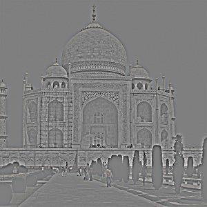
Changing alpha changes how strong the effect is. At 0.5 it's subtle, at 1 and 2 the carvings on the building and the edges of the trees get much crisper, and at 5 it goes too far, the whole image looks harsh and there are bright outlines along the edges where the added detail overshoots.
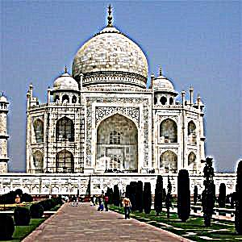
I also used a close up photo I took of an old radiator, since the chipped paint and the crack have a lot of fine texture.
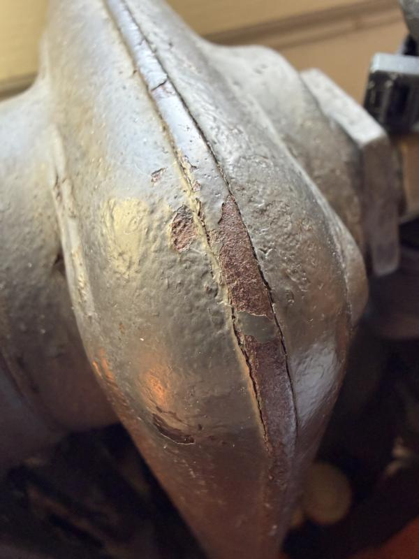
To test whether sharpening can undo a blur, I blurred the sharp radiator photo and then sharpened the blurred version. It helps, the edges of the crack come back and the image looks less soft, and the average pixel difference from the original drops from 0.0133 for the blurred version to 0.0106 after sharpening with alpha 1. But it doesn't really restore it. The fine texture of the paint is gone, since the blur shrank those frequencies so much that there is basically nothing left of them to boost, sharpening can only amplify what is still there. Pushing alpha up to 3 makes it worse again, 0.0114, because it starts boosting the noise and adding halos instead of detail.
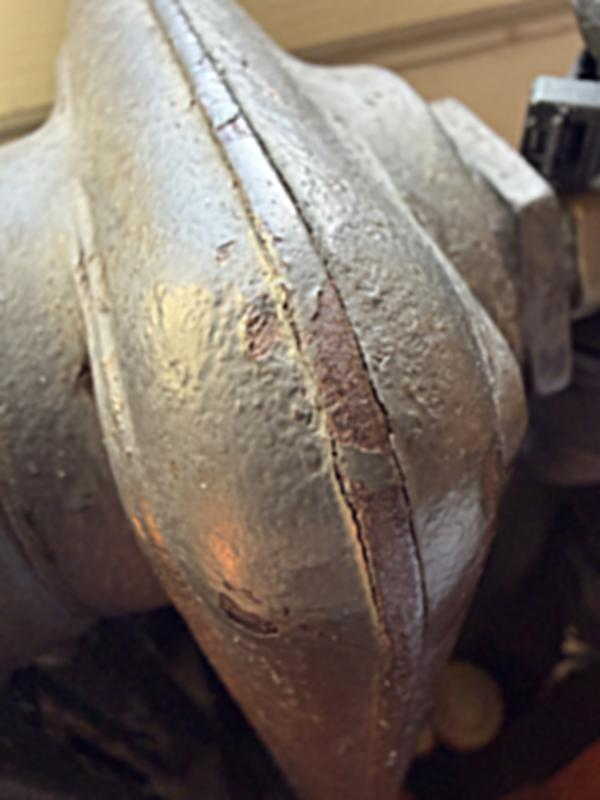
A hybrid image looks like one thing up close and another from far away. Up close your eyes pick up the fine detail, the high frequencies, but from far away that detail is too small to see and only the overall shape, the low frequencies, is left. So a hybrid is the low frequencies of the far image added to the high frequencies of the close image. The low pass is a Gaussian blur and the high pass is the original minus its Gaussian blur.
The two images have to line up first, otherwise you just see two separate things at every distance. I used two matching points on each image, the eyes for faces and the top and bottom or the left and right edges for objects, and warped the close image so its points land on the far image's points, which fixes the size, rotation and position. After that I cropped 40 pixels off each side, since the warp stretches the border pixels into streaks.
This is the one I'm showing the whole process for. The room spray is the far image, its dark bottle and tall black cap are a strong shape that survives blurring. The bug spray is the close image, its label text and the ridges on the nozzle are all fine detail. I shot both against the same wall so the backgrounds match.
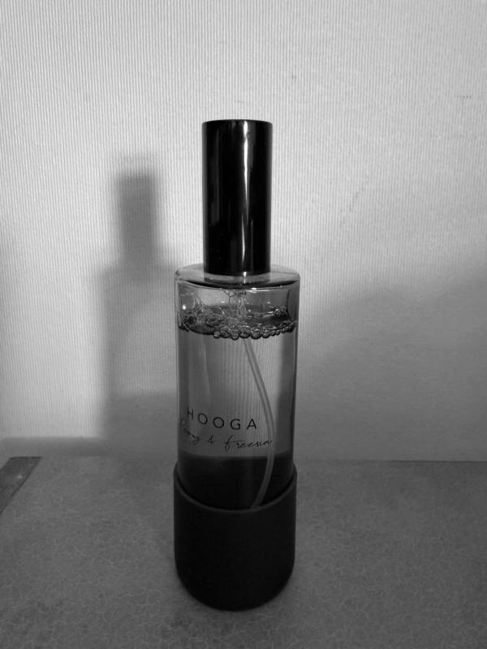
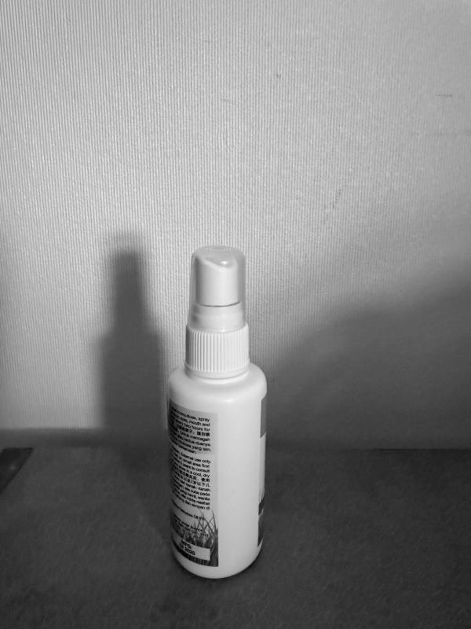
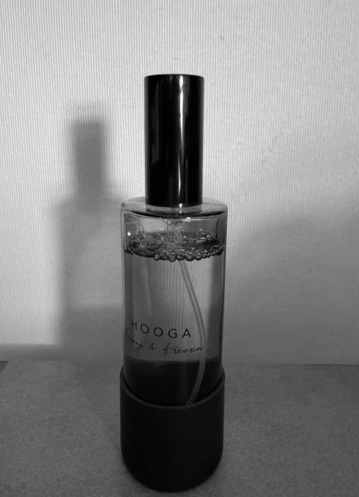
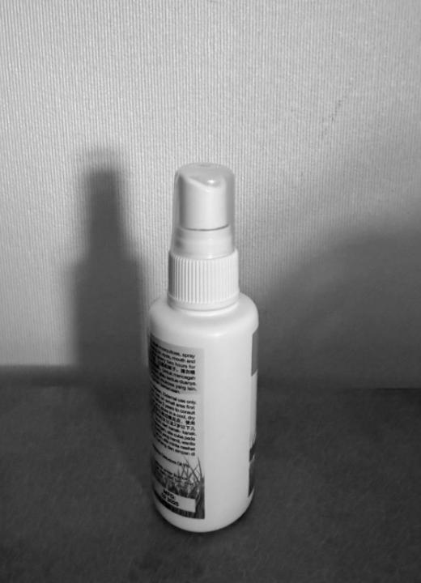
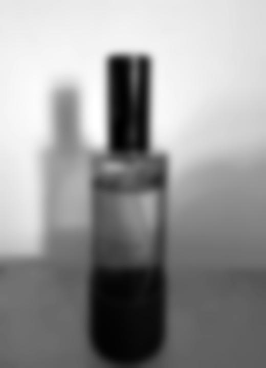
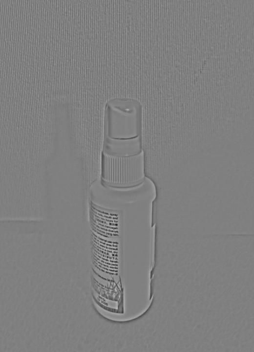
The Fourier transforms show what each filter keeps. They are the log magnitude of the FFT, shifted so the low frequencies are in the middle. They all use the same brightness scale so they can be compared. The low pass room spray only keeps the bright spot and cross in the middle, everything further out is black. The high pass bug spray is the opposite, the bright spot in the middle is gone but everything further out is still there. The hybrid has both, the bright center from the room spray and the outer frequencies from the bug spray.
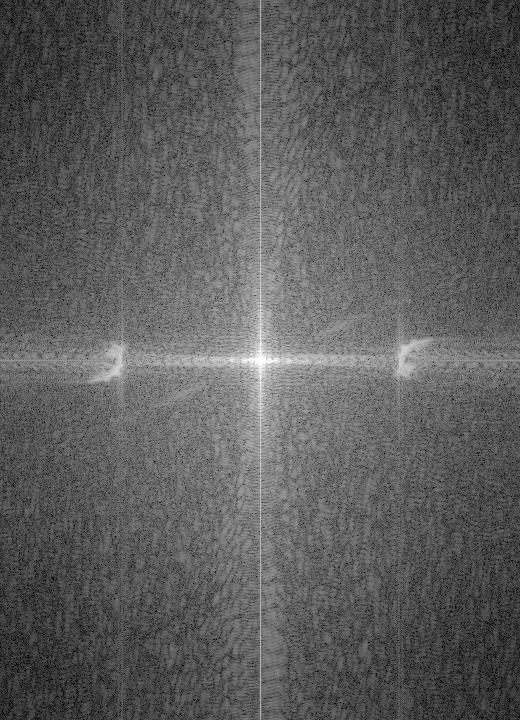
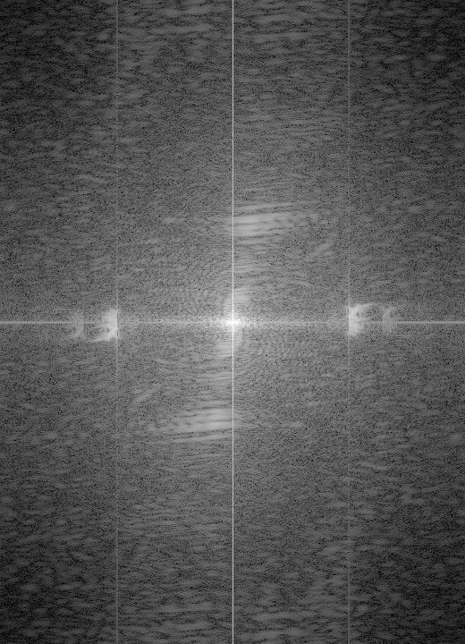
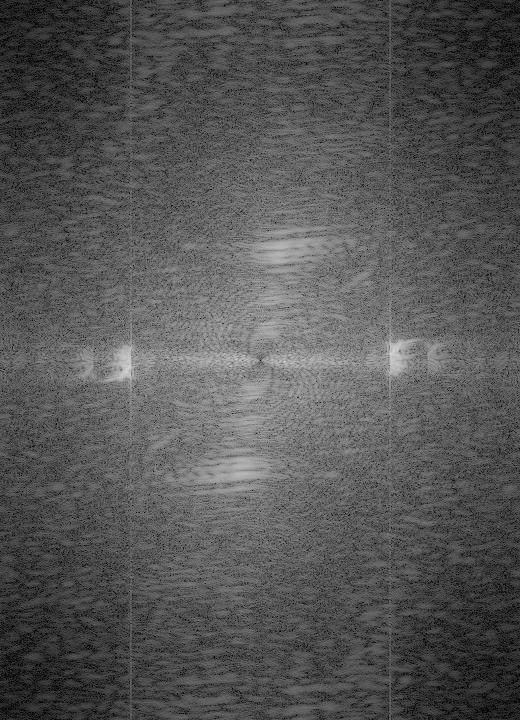
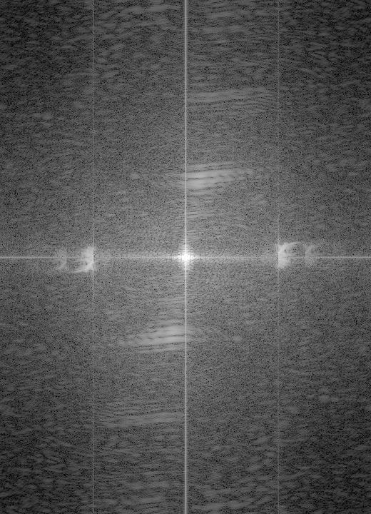
The cutoff frequency is set by the sigma of each Gaussian, a bigger sigma blurs more so it cuts off at a lower frequency. The low pass sigma has to be big enough that the room spray's label and texture are gone and only the silhouette is left, and the high pass sigma has to be small enough that the bug spray's overall shape doesn't come through, only its detail. 8 for the low pass and 4 for the high pass worked on the first try for this pair. Up close you read the bug spray label and see the nozzle, and shrunk down the text disappears and it turns into the dark room spray with its tall cap.
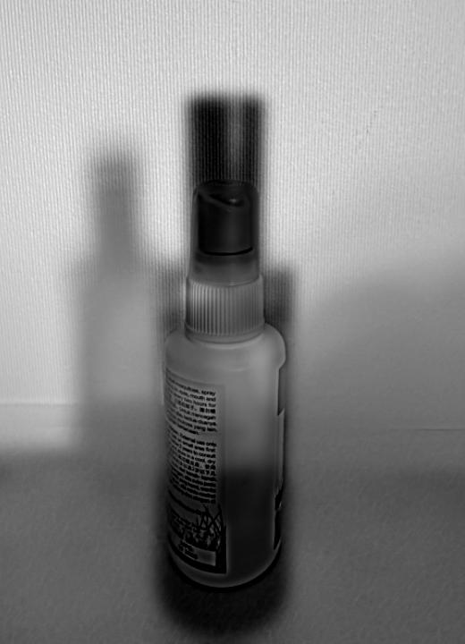
The starter code had Derek as the close image and Nutmeg as the far one, so I tried that first, but Derek's face took over at every distance and the cat barely showed up even when shrunk. Swapping them worked much better. Derek is the far image and Nutmeg is the close one, so up close you see the cat's face, eyes and whiskers, and from far away it's Derek. I lined up the eyes, which also rotated the cat since its head was tilted. Sigma 8 for the low pass and 4 for the high pass.
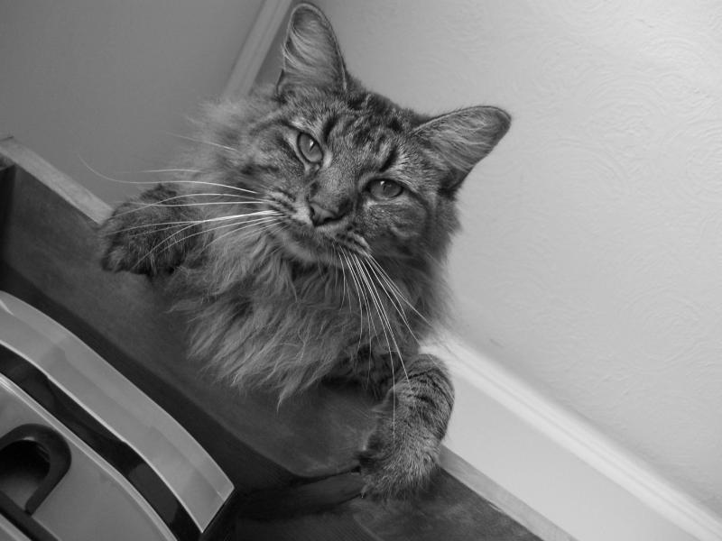
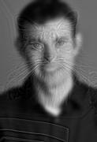
The candle is the far image, it's a plain white shape with one big red seal. The creatine tub is the close image because of all the text on the label. This one took the most tuning. With 8 and 4 the big "IMPACT Creatine" text still showed up when shrunk, and 8 and 2 and 10 and 2 weren't much better, since that text is bold enough to survive at lower frequencies. Going all the way down to sigma 1 for the high pass so only the very finest detail gets through, and 6 for the low pass, is what finally let the candle take over from far away. Up close you can still read the label, it's just fainter. The tub's lid still shows at every distance, since the candle has nothing there to cover it.
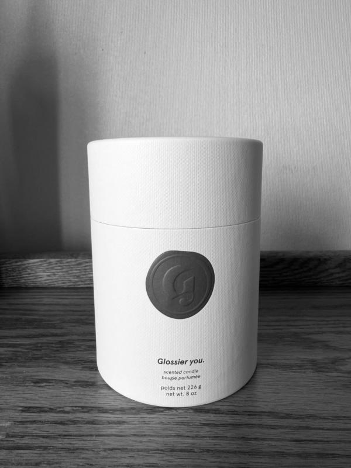
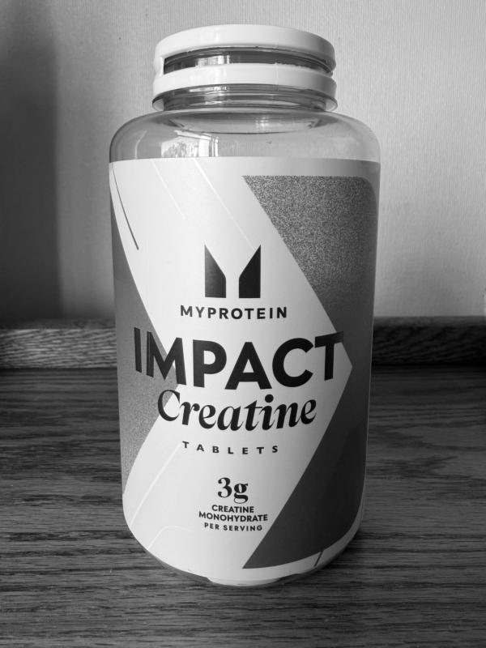
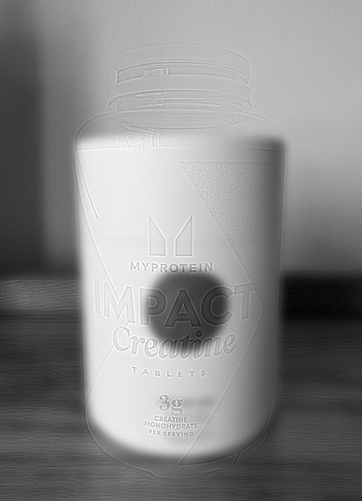
A Gaussian stack is the image blurred over and over, where every level is the level before it blurred again. Unlike a pyramid nothing gets downsampled, so every level stays the same size as the original. To make it act like a pyramid I doubled the sigma each level, 1, 2, 4, 8 and 16, for 6 levels total. The big sigmas need big kernels, 97 x 97 for sigma 16, so I blur the rows and then the columns with the 1D Gaussian instead, which gives the same result since the 2D Gaussian is just the 1D one times itself, but is much faster.
A Laplacian stack level is the difference between two neighboring Gaussian levels, so each one holds a single band of frequencies, the detail that got removed going from one blur to the next. The last level is the blurriest Gaussian level. Adding every Laplacian level back up gives the original image, I checked and the biggest difference was 1.1e-16. Laplacian levels are centered around zero, so I stretch each one to 0 to 1 to show it.
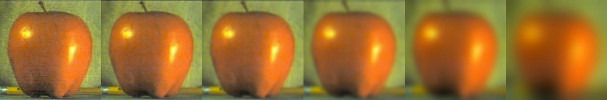
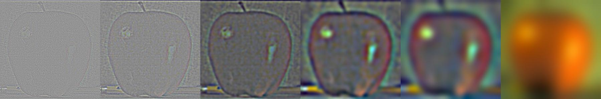
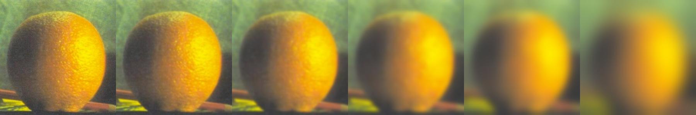
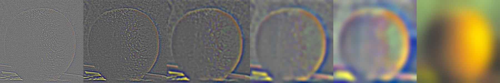
This is my version of figure 3.42 from Szeliski. The first column is the apple's Laplacian levels times the blurred mask, the second is the orange's times one minus the mask, and the third is the two added together. The rows are levels 0, 2 and 4, and the bottom row is every level added back up. The mask gets blurrier at each level, so the fine detail is blended over a narrow seam and the big smooth shapes over a wide one.
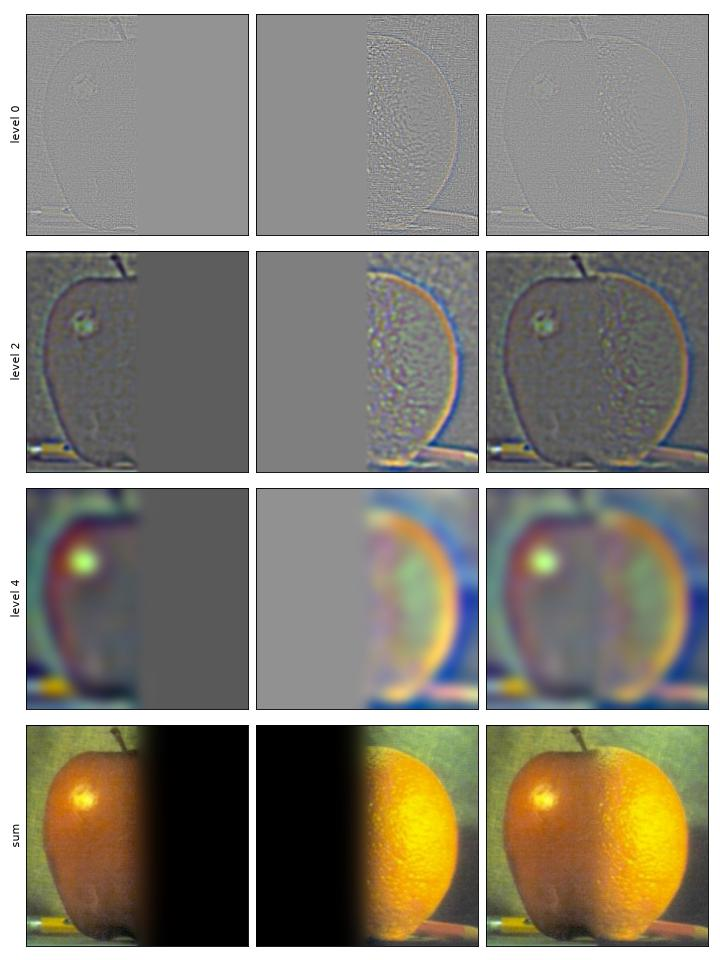
To blend two images I build a Laplacian stack for each one and a Gaussian stack for the mask. At every level I take the first image's level where the blurred mask is 1 and the second image's level where it's 0, and then add all the levels back up. Pasting the halves directly leaves a hard seam, and blurring the whole mask once either leaves a ghost of both images or a visible seam depending on how much you blur. Blending each frequency band with its own amount of blur avoids both. All of the blending is done in color, one channel at a time.


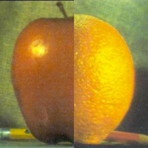
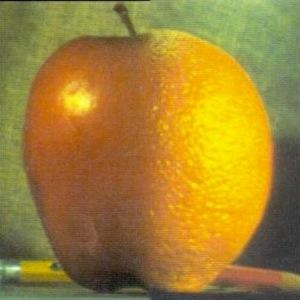
The first irregular mask is a circle. I lined the candle up with the creatine tub the same way as the hybrid, then used a circle around the candle's wax seal as the mask, so the seal ends up stamped onto the label.
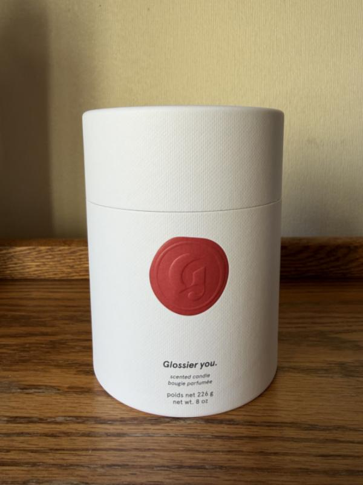
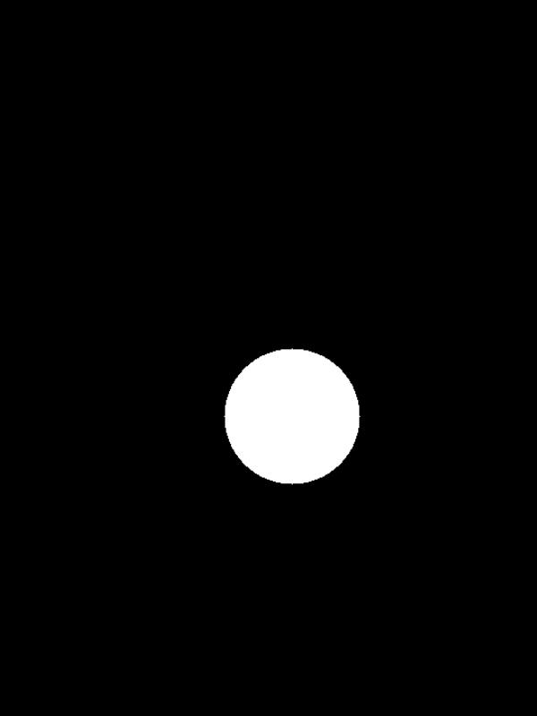
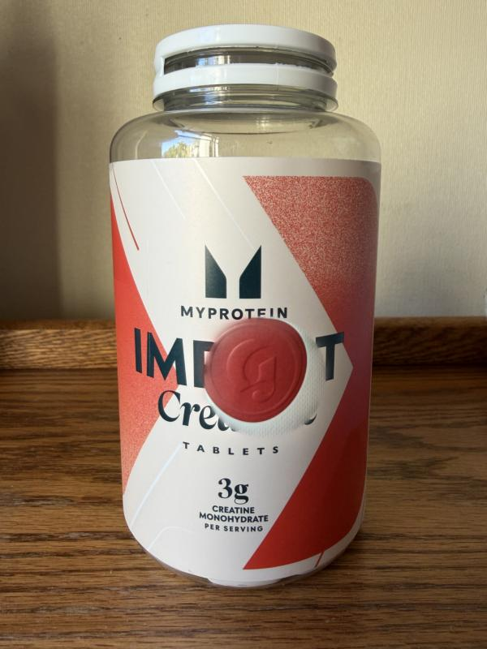
The second irregular mask is an oval over Derek's face, with my selfie lined up by the eyes. My first oval went up into my bangs, and blending dark hair into Derek's forehead left a gray smudge, so I brought the top of the oval down to just under my hair. The lighting doesn't match, my selfie is lit from a window behind me, and you can still see a bit of that brightness at the edges of my cheeks, but compared to pasting it in directly the edge of the oval is gone.
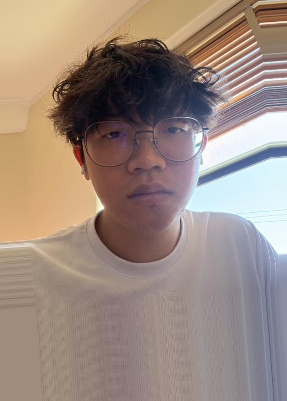
For my creative one I went the other way and put Nutmeg's face on my selfie, lined up by the eyes, with a bigger oval so the muzzle and whiskers fit. This is my favorite, the cat's fur blends into my hair and the whiskers carry on past the edge of the mask, so it's hard to tell where the cat stops.
Here are the Laplacian stacks for it, laid out the same way as the oraple figure. At level 0 only a thin ring around the mask mixes the two, while at level 4 the mask is so blurry the two images mix over a wide area, which is why the overall color and lighting change smoothly while the fur and whiskers stay sharp.
The main takeaway from this project is that almost everything in this project relies on the same operations. Blurring, edge detection, sharpening, hybrid images and blending are all just convolving with a different kernel, then modifying those results by either subtracting or adding to it. When I started to see an image as a stack of frequency bands, it suddenly clicked and I realised why you couldn't just blur and then sharpen to get the same result back and why a hybrid image changes with distance.